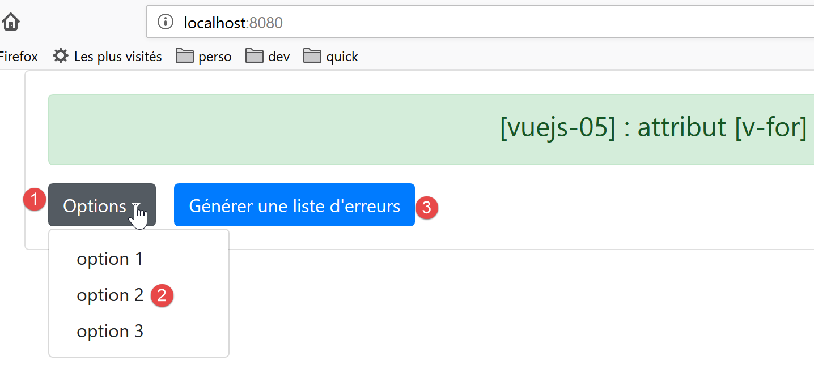

7. projeto [vuejs-05]: diretiva [v-for]
O projeto [vuejs-05] apresenta a diretiva [v-for]:

7.1. O script principal [main.js]
O código do script principal [main.js] é idêntico ao do script [main.js] dos projetos anteriores.
7.2. O componente principal [App]
O código do componente [App] é o seguinte:
<template>
<b-container>
<b-card>
<b-alert show variant="success" align="center">
<h4>[vuejs-05] : attribut [v-for]</h4>
</b-alert>
<VFor />
</b-card>
</b-container>
</template>
<script>
import VFor from "./components/VFor.vue";
export default {
name: "app",
components: {
VFor
}
};
</script>
- linhas 7, 14, 19: o componente [App] utiliza o componente [VFor];
7.3. O componente [VFor]
A apresentação visual será a seguinte:


O código do componente [VFor] é o seguinte:
<template>
<div>
<!-- uma lista suspensa -->
<b-dropdown id="dropdown" text="Options">
<b-dropdown-item v-for="(option,index) in options"
:key="option.id"
@click="select(index)">{{option.text}}</b-dropdown-item>
</b-dropdown>
<!-- botão -->
<b-button class="ml-3"
variant="primary"
@click="generateErrors"
v-if="!error">Générer une liste d'erreurs</b-button>
<!-- alerta -->
<b-alert show variant="danger" v-if="error" class="mt-3">
Les erreurs suivantes se sont produites :
<br />
<ul>
<li v-for="(erreur,index) in erreurs" :key="index">{{erreur}}</li>
</ul>
</b-alert>
</div>
</template>
<!-- script -->
<script>
export default {
name: "VFor",
// propriedades estáticas do componente
data() {
return {
// lista de erros
erreurs: [],
// erro ou não
error: false,
// lista de opções do menu
options: [
{ text: "option 1", id: 1 },
{ text: "option 2", id: 2 },
{ text: "option 3", id: 3 }
]
};
},
// métodos
methods: {
// geração de uma lista de erros
generateErrors() {
this.erreurs = ["erreur 1", "erreur 2", "erreur 3"];
this.error = true;
},
// o utilizador selecionou uma opção
select(index) {
alert("Vous avez choisi : " + this.options[index].text);
}
}
};
</script>
Comentários
- linha 4: a baliza <b-dropdown> serve para definir uma lista suspensa [1] sob a forma de um botão em que se clica para ver as opções da lista [2]. [text=’Options’] define o texto exibido no botão [1];
- linhas 5-7: a baliza <dropdown-item> define um elemento da lista suspensa;
- linha 5: o atributo [v-for] indica que a baliza <dropdown-item> deve ser repetida para cada elemento [option] do atributo [options], linhas 37-41, do componente. [index] representa o número do elemento na lista [0, 1, ..., n]. O nome do elemento [option], bem como o do índice, são livres. Ter-se-ia podido escrever [<b-dropdown-item v-for="(o,i) in options" :key="o.id" @click="select(i)">{{o.text}}</b-dropdown-item>];
- linha 6: se se esquecer o atributo [key], ESLint emite um aviso. O valor do atributo [key] deve permanecer inalterado ao longo do tempo. Por isso, o valor [index] do elemento não é adequado. Pois, se este elemento for eliminado, os valores [index] dos elementos que se seguem na lista serão diminuídos em 1. Assim, neste caso, toma-se como valor-chave o valor [option.id], linhas 38-40, que não se alterará caso um elemento seja eliminado. O atributo [key] é um elemento de otimização da regeneração do DOM (Document Object Model) pelo [Vue.js] quando a lista tem de ser regenerada. Tome nota da notação [:key], uma vez que [key] tem um valor dinâmico;
- linha 7: o método [select(index)], linhas 49-51, será chamado quando o utilizador clicar num elemento da lista;
- linha 7: o texto da opção será o valor [option.text] definido nas linhas 37-41;
- linha 10: o botão [3]. [class=’ml-3] significa margem (m) à esquerda (l) de três espaçadores. [@click="generateErrors"] indica que o método [generateErrors], linhas 45-48, será executado quando se clicar no botão. [v-if="!error"] indica que a exibição do botão depende do valor do atributo estático [error] da linha 35;
- linhas 15-21: um alerta do tipo [danger] [4], também controlado pelo atributo estático [error] da linha 35. O atributo [class=’mt-3’] (margin top 3 spacers) define o espaço entre este alerta e o elemento que se encontra acima dele;
- linha 27: a baliza HTML <br /> cria uma quebra de linha;
- linha 18: início de uma lista não ordenada [ul=unordered list];
- linha 19: a baliza <li> define um elemento da lista <ul>. Mais uma vez, utiliza-se uma diretiva [v-for] para gerar a baliza várias vezes. Tantas vezes aqui quantos forem os elementos da tabela [erreurs] da linha 33. Aqui, utiliza-se o atributo [:key=index]. Já referimos anteriormente que o índice dos elementos de uma lista não constituía um bom critério de distinção entre os elementos da lista, pois, em caso de eliminação de um elemento, todos os elementos seguintes vêem o seu índice alterado. Aqui, isso não tem importância, pois os elementos da lista de erros não são suscetíveis de serem eliminados;
- linha 19: o elemento serve para apresentar o elemento [erreur] da lista [erreurs];
- linhas 30-43: todos os elementos dinâmicos do [template] são atributos do componente. Aqui não existe nenhuma propriedade do tipo [props] cujo valor seja definido pelo componente pai;
- linhas 48-55: o método [generateErrors] gera a lista de erros a apresentar pela baliza <ul> das linhas 16-18. Além disso, altera o atributo estático [error], tanto para apresentar esta lista de erros (linha 15) como para ocultar o botão de geração (linha 13);
7.4. Execução do projeto